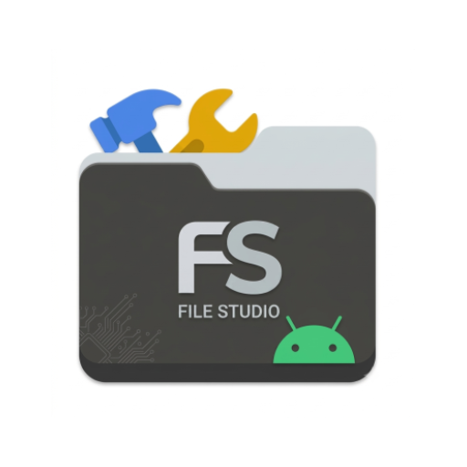

01 / Organize
Find it. Move it. Keep going.
Keep folders close with tabs and bookmarks. Copy, move, or rename files in batches, and recover items from the built-in recycle bin.

File StudioYOUR WORKSPACE ON ANDROID
Browse files. Edit code. Inspect an APK. Connect to your server. Keep the tools you use together, right on Android.
Made for your Android phone and tablet.
START WITH A FILE
A quick change, a closer look, or a file on another device. Start where you are.
01 / Organize
Keep folders close with tabs and bookmarks. Copy, move, or rename files in batches, and recover items from the built-in recycle bin.
02 / Edit
Fix a config, update a script, or read a log. Syntax highlighting, search and replace, and undo keep the details within reach.
03 / Inspect
Browse ZIP archives, check binary data in hex, or explore an APK’s DEX class tree. Read Smali and preview Java when you need a closer look.
04 / Connect
Open files on your computer or server over FTP, FTPS, SFTP, SMB, or WebDAV. Share a folder locally, or send files to another File Studio device on the same Wi-Fi.
ROOM TO GO DEEPER
Open a session from the folder you’re browsing, with extra keys for the commands you use.
Use your existing setup for elevated file access when you need it.
Inspect databases, review app permissions and components, and export installed APKs.
View PDFs, edit images, and tune audio playback without leaving your file workspace.

For anyone who works with files on Android, from everyday organizing to developers editing scripts, inspecting APKs, or connecting to a server.
Everyday file management does not require root. Access to protected locations depends on Android permissions and your Root or Shizuku setup.
Some advanced tools require a subscription. APK / DEX Smali and Java previews are read-only in the Google Play edition. Local SFTP sharing requires Android 8 or later.
The next time a file needs your attention, open File Studio.